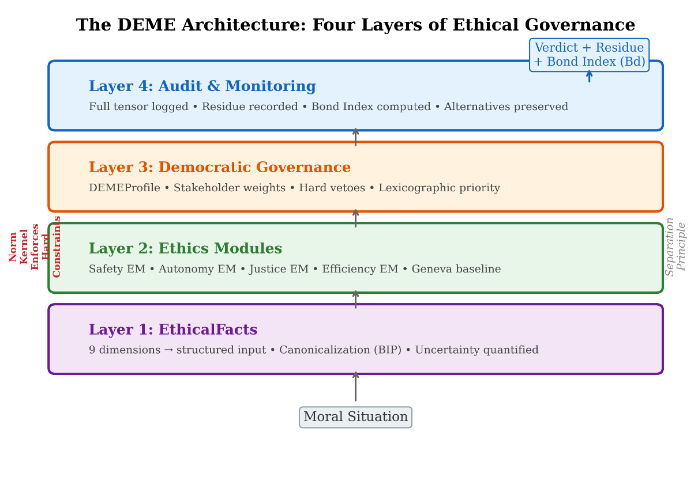
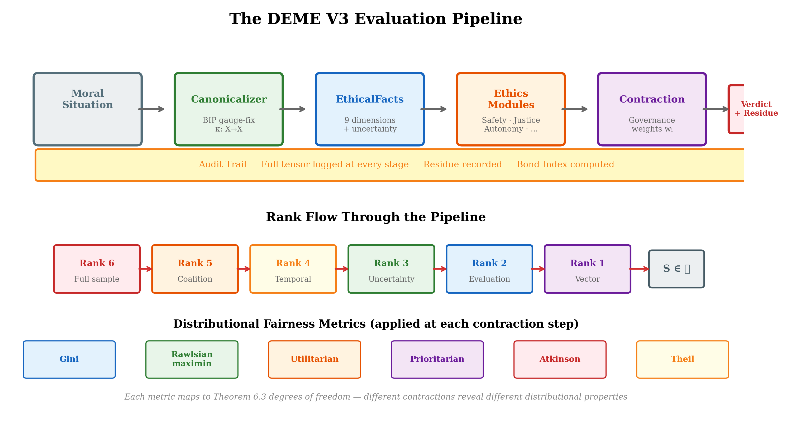
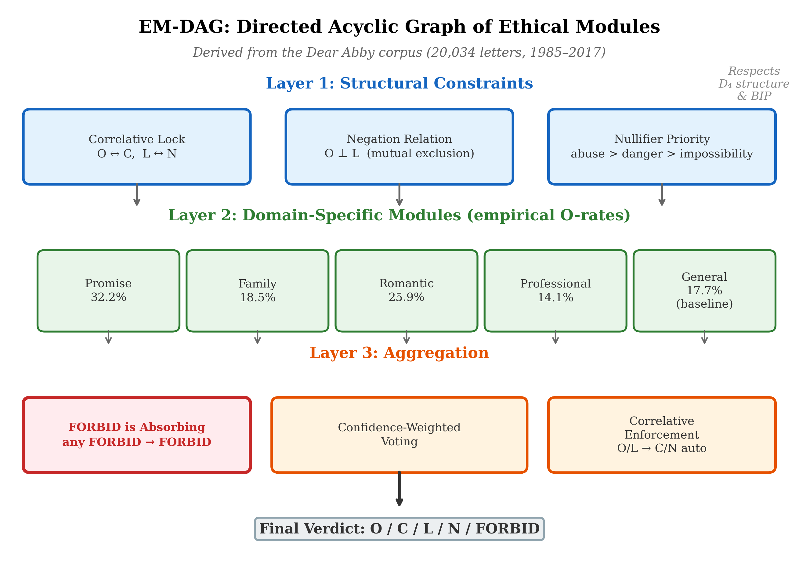

Chapter 19: The DEME Architecture and ErisML
RUNNING EXAMPLE — Priya’s Model
Priya sketches a DEME-compliant TrialMatch. Layer 1 (Application): the ML model, now outputting nine-dimensional vectors. Layer 2 (Translation): an ErisML specification canonicalizing patient situations—medical severity maps to μ = 1 (Empirical–Deontic), access burden to μ = 3 (Empirical–Consequential), consent capacity to μ = 5 (Normative–Aretaic). Layer 3 (Evaluation): the contraction Iₘ Oᵋ performed explicitly, every weight logged. Layer 4 (Governance): an ethics board including patient advocates sets the metric weights, reviewable quarterly. The Bond Index Bd = D_op / τ measures output drift from the governance-specified metric. Priya estimates six months to rebuild. For the first time, every dimension will be visible.
19.1 From Theory to Infrastructure

Figure 12 | The DEME Architecture: Four Layers of Ethical Governance
The four-layer DEME architecture: Governance (democratic specification of weights and constraints), Ethics Module (tensor evaluation and invariance testing), Canonicalizer (BIP-enforcing input normalization), and Audit (immutable logging with Bond Index monitoring).
Chapter 18 established that geometric ethics provides the right mathematical vocabulary for AI alignment: tensor-valued objectives, invariance as alignment, explicit contraction, and the No Escape Theorem for structural containment. The mathematics is sound. The question is: how do we build it?
This chapter bridges the gap between geometric theory and engineering practice. It presents two interconnected systems:
ErisML (named for the Greek goddess of discord) — a modeling language for specifying environments, agents, objectives, and normative constraints in a single, machine-interpretable substrate. ErisML is the representation layer: the language in which geometric ethics is expressed for computation.
DEME (Democratically Governed Ethics Module Engine) — an architecture for structured ethical governance of AI systems. DEME is the execution layer: the engine that evaluates actions against geometric ethical constraints, aggregates stakeholder perspectives, and produces auditable verdicts.
Together, they implement the geometric framework:

Figure 13 | The DEME V3 evaluation pipeline: from input situation through canonicalization, tensor evaluation, explicit contraction with governance weights, to audited output with invariance verification at each stage.
| Geometric concept | ErisML/DEME implementation |
|---|---|
| Moral manifold | ErisML environment specification |
| Obligation vectors | Ethics Module evaluations |
| Interest covectors | Stakeholder weight configurations |
| Moral metric | Governance profiles (trade-off structure) |
| Contraction | Democratic aggregation |
| BIP gauge invariance | Canonicalization pipeline |
| Moral residue | Audit trail and logged alternatives |
| Conservation of harm | Bond Index violation detection |
| Uncertainty tensor | V3 rank-3 MoralTensor + CVaR |
| Temporal dynamics | V3 rank-4 temporal tensor + discount |
| Collective agency | V3 rank-5 coalition tensor + Shapley values |
| Hardware acceleration | V3 CPU/CUDA/Jetson backends |
Update (February 2026). The four additional rows reflect DEME V3 extensions implemented since the initial architecture. The V3 reference implementation (196 commits, 15 sprints) extends the original rank-2 tensor to ranks 3–6, adds multi-agent game-theoretic coordination, temporal discounting, distributional uncertainty quantification, and hardware-accelerated evaluation. These extensions are described in the updated sections below.
The chapter proceeds as follows. Section 19.2 motivates the engineering challenge. Sections 18.3–18.5 develop the ErisML language. Sections 18.6–18.9 develop the DEME architecture. Section 18.10 presents the Grand Unified AI Safety Stack (GUASS) that integrates them. Section 19.11 works through a case study.
19.2 The Engineering Challenge
AI systems that make morally significant decisions face four types of chaos that any governance infrastructure must handle:
Observational chaos. Sensors conflict, data is noisy, ground truth is uncertain. A hospital monitor shows a vital-sign spike — distress or sensor malfunction? A motion detector and GPS disagree on a patient’s location. The moral manifold (Chapter 5) is partially observable, and the observations themselves are unreliable.
Intentional chaos. Multiple objectives conflict with no clear priority. Energy management wants to shed load; medical monitors demand power; the patient wants comfort; policy says critical devices have priority — but what counts as “critical”? The tensor hierarchy (Chapter 6) represents this multi-dimensionality, but the system must handle it in real time.
Normative chaos. Regulations, policies, and ethical principles contradict. HIPAA demands privacy; public health law mandates reporting. Advance directives limit intervention; duty to rescue requires action. The stratified moral space (Chapter 8) has genuine boundary singularities — and the system must navigate them.
Temporal chaos. Distribution shifts are constant. Models trained on one population must adapt when the population changes. Policies appropriate for routine operation must flex during emergencies. The moral dynamics of Chapter 10 — parallel transport, curvature, holonomy — manifest as real-time challenges.
Current approaches fragment the problem: prompts encode goals but are brittle and unverifiable; reward functions optimize objectives but are opaque and single-stakeholder; rule engines check policies but lack nuance; code provides orchestration but obscures intent. These live in separate systems with no unified governance surface.
The geometric framework demands unification. The moral tensor Tνμ integrates obligations, interests, uncertainty, and context into a single mathematical object. The engineering infrastructure must do the same.
19.3 ErisML: A Modeling Language for Geometric Ethics
ErisML provides a single substrate for specifying the five components that geometric AI governance requires:
Environment — state spaces, dynamics, uncertainty, observability
Agency — capabilities, beliefs, memory, decision interfaces
Intent — multi-objective utilities, preferences, goal structures
Norms — permissions, obligations, prohibitions, sanctions
Dynamics — multi-agent interactions, strategic behavior, emergence
Why unification? Because these elements are inseparable in moral life. Agent actions depend on environment state. Environment dynamics change based on multi-agent interactions. Norms constrain which intents can be pursued. Chaos emerges from their interaction. A language that separates them into different formalisms cannot capture the structure that the geometric framework reveals.
Environment Specification
An ErisML environment declares the state space over which moral evaluation operates — the computational representation of the moral manifold:
environment HospitalRoom { objects: Patient, Nurse, CareAgent, Monitor, IVPump; state: patient.vitals: {hr: real, bp: real, spo2: real}; patient.location: {in_bed, bathroom, fallen}; patient.pain_level: real @ uncertain(self_report); emergency_status: {routine, urgent, critical}; dynamics: update_vitals(v: Vitals) ~> patient.vitals = v @ prob 0.95; fall_detected() ~> { patient.location = fallen; emergency_status = critical; }; }
The @ uncertain(self_report) annotation declares that pain level is not directly measurable but inferred from patient testimony — encoding the epistemic dimension of the moral manifold (Chapter 5, dimension D9). The stochastic dynamics (@ prob 0.95) encode the environment’s inherent uncertainty, which feeds into the uncertainty tensor (Chapter 16).
Agent Specification
Agents are declared with explicit capabilities, partial observability, and multi-objective intents — the computational representation of moral agency:
agent CareAgent { capabilities: { monitor_vitals, adjust_iv_rate, summon_nurse, provide_comfort, call_emergency }; beliefs: { fully_observed: [patient.vitals, monitor.last_sync]; estimated: [patient.pain_level, patient.location]; hidden: [nurse.current_workload]; }; intents: vector_objective { maximize: patient.comfort, minimize: response_time, maintain: patient.safety >= threshold(critical), respect: nurse.workload <= threshold(sustainable) }; }
The vector_objective keyword declares that the agent’s objective is a vector, not a scalar — implementing the tensor-valued objectives of Chapter 18 (§18.3). The system maintains separate tracks for each dimension (comfort, response time, safety, workload) rather than collapsing them into a single number.
Norms Specification
Normative constraints are first-class objects in ErisML, not afterthoughts encoded in reward shaping or prompt engineering:
norms ClinicalProtocol { jurisdiction: HospitalRoom; authority: Hospital.PolicyBoard + State.HealthDept; human_override: { Nurse.can_override: any CareAgent.action; override_logging: mandatory; }; prohibition: { any_agent.share(patient.data, external_party) unless consent_given OR legal_mandate; }; obligation: { CareAgent.summon_nurse when patient.vitals in danger_zone within 30 seconds; }; priority: { patient.safety > efficiency > comfort; }; context_sensitivity: { during emergency_status == critical: override efficiency_objectives; expand CareAgent.capabilities += emergency_protocols; }; }
Several features deserve comment:
Jurisdiction and authority. Every norm has a declared source of authority — mapping to the governance account of Chapter 9. The metric is not discovered or stipulated; it is governed by a declared institutional process.
Context sensitivity. Norms adapt to context (during emergency_status == critical), implementing the context-dependent weighting that the Dear Abby corpus revealed (Chapter 17, §17.2): the same situation activates different obligation strengths depending on the stratum.
Priority ordering. The declaration patient.safety > efficiency > comfort is a lexicographic contraction (Chapter 15, §15.5): safety is satisfied first, then efficiency, then comfort. The contraction order is explicit and auditable.
Human override. The override mechanism implements the escalation principle (Chapter 16, §16.8): when the system’s capacity for moral reasoning is exceeded, control passes to a human agent.
Formal Semantics
ErisML specifications compile to a Norm-Constrained Stochastic Game (NCSG):
Definition 19.1. A Norm-Constrained Stochastic Game is a tuple ⟨N,S,{Ai},{Ωi},T,{Ui},Φ,C⟩ where:
N = set of agents
S = state space (finite, continuous, or hybrid)
Ai = action space for agent i
Ωi = observation space for agent i
T:S×A1×⋯×An→Δ(S) = stochastic transition kernel
Ui:S×A→Rk = multi-objective utility (vector-valued)
Φ={ϕj} = set of normative constraints
C:Φ×S→ priority ordering = conflict resolution function
The vector-valued utility Ui:S×A→Rk is the computational realization of the tensor evaluation Tνμ restricted to agent i’s perspective. Each component Uiμ tracks a distinct moral dimension. The conflict resolution function C implements the contraction: when the multi-dimensional evaluation must yield a single action, C specifies the priority ordering among norms.
The key constraint: an agent’s policy πi may assign positive probability to an action only if that action is permitted (or obligated) by all applicable norms, given the current state and the priority ordering:
πi(a∣s)>0 only if ∀ϕ∈Φ:ϕ(s,a,t)∈{permit,oblige} or C(Φ,s) overrides ϕ
This is a norm-gated policy: the norms act as constraints on the policy space, not as reward signals to be optimized. The agent cannot learn to “game” the norms because the norms define the space of admissible actions, not a scalar to be maximized.
19.4 ErisML Compilation and Complexity
Compilation Targets
ErisML specifications must compile to diverse computational backends, each preserving different aspects of the geometric structure:
| Backend | Preserves | Loses | Verification |
|---|---|---|---|
| Classical planning (PDDL) | Deterministic dynamics, goals | Norms → preconditions | Planning guarantees |
| Probabilistic model checking (PRISM) | Stochastic dynamics | Strategic interaction | Probabilistic verification |
| Safe reinforcement learning | Continuous optimization | Hard logical constraints | Statistical testing + monitors |
| Multi-agent RL | Strategic learning | Logical norms → soft constraints | Empirical testing |
Each compilation target represents a different contraction of the full ErisML specification — a mapping from the rich normative structure to a computationally tractable approximation. The information lost in compilation is the engineering analogue of the moral residue (Chapter 15): normative structure that the computational backend cannot represent.
The framework’s contribution is to make these losses explicit. A PDDL compilation loses normative provenance (why a precondition exists); this loss is documented. A safe-RL compilation softens hard constraints into penalty terms; the softening is logged. The audit trail records not only what the system decided but what normative structure was sacrificed in the compilation.
Computational Complexity
The complexity of ErisML verification depends on the language fragment:
| Fragment | State space | Norms | Agents | Verification |
|---|---|---|---|---|
| ErisML-Core | Finite, | Propositional | Single | model checking |
| ErisML-Multi | Finite, | Propositional | Multiple | PSPACE-complete |
| ErisML-Temporal | Continuous time | LTL | Single | PSPACE-complete |
| ErisML-Full | Hybrid/infinite | First-order | Multiple | Undecidable |
The design principle: the core language remains in decidable fragments. Extensions that push into undecidable territory are marked with explicit complexity warnings and require fallback strategies (abstraction, bounded model checking, or runtime monitoring).
This is consistent with the framework’s treatment of moral uncertainty (Chapter 16): we cannot always guarantee a verdict, but we can characterize precisely where the framework falls silent and provide principled fallback strategies.
19.5 The Translation Layer
Between human ethical frameworks and ErisML lies the Translation Layer — a modular system of policy DAGs (Directed Acyclic Graphs) that translate any ethical framework into ErisML constraints.
The Problem of Ethical Pluralism
Different jurisdictions, institutions, and moral traditions impose different normative requirements. The EU AI Act mandates transparency and human oversight. Medical ethics requires beneficence, non-maleficence, autonomy, and justice. Islamic finance prohibits riba (interest). Indigenous data sovereignty principles require community consent for data use.
The geometric framework accommodates this pluralism through the governance account (Chapter 9): different communities govern different metrics. The Translation Layer implements this accommodation computationally: each ethical tradition is encoded as a set of policy modules that translate its requirements into ErisML constraints.
Policy Module Architecture
Each ethical requirement translates to a policy module — the atomic unit of ethical translation:
policy_module { id: "eu.trustworthy_ai.transparency" version: "1.0.0" source_framework: "EU Ethics Guidelines for Trustworthy AI" depends_on: [ "eu.trustworthy_ai.technical_robustness", "eu.trustworthy_ai.privacy_data_governance" ] constraints: [ { id: "traceability", erisml: " constraint Traceability(system: AISystem) { require system.decision_logging.enabled == true; require system.data_provenance.documented == true; } " }, { id: "explainability", erisml: " constraint Explainability(system: AISystem) { require system.decision_explanation.available == true; if (system.impacts_fundamental_rights) { require system.explanation_detail >= HIGH; } } " } ] fidelity_class: "Approximate" loss_documentation: { what_is_lost: [ "Full interpretive flexibility of 'to the best possible standard'", "Context-dependent thresholds for explanation detail" ] } governance: { owner: "EU AI Ethics Translation Group" review_cycle: "Annual" change_requires: "Consensus (α > 0.67)" } }
Several design features implement the geometric framework:
Fidelity classification. Each translation is classified as faithful (the ErisML constraint captures the full normative content), approximate (captures the main thrust but loses nuance), or indicative (captures the direction but not the force). This is the engineering analogue of contraction loss (Chapter 15, §15.6): the translation from natural-language ethics to formal constraints is itself a contraction, and the information lost is documented.
Loss documentation. The loss_documentation field explicitly records what normative content could not be translated — the moral residue of formalization. This residue is not a defect; it is the honest acknowledgment that formal languages cannot capture everything that natural-language ethical frameworks express.
DAG composition. Policy modules form Directed Acyclic Graphs through their dependency declarations. The EU’s seven requirements form a DAG rooted in human dignity, with transparency depending on robustness and privacy, and accountability depending on all other requirements. Topological ordering ensures that modules are evaluated in dependency order, and diamond dependencies are detected and resolved.
Geometric Interpretation
The Translation Layer implements a specific geometric operation: the pullback from the space of ethical traditions to the space of ErisML constraints.
Let E denote the space of ethical frameworks and C the space of ErisML constraint sets. A policy module P:E→C is a map from an ethical tradition to a formal constraint set. The pullback P* maps evaluations on C back to evaluations on E: it tells us whether a system that satisfies the formal constraints also satisfies the ethical framework.
The fidelity classification measures the quality of this pullback:
Faithful: P* is an isomorphism (no information lost)
Approximate: P* is surjective but not injective (distinctions lost)
Indicative: P* captures only the dominant eigenvalues of the ethical framework
This vocabulary makes precise what other approaches leave vague: exactly how well the formal system captures the normative intent.
19.6 DEME: The Ethics Engine
DEME is the execution engine that evaluates actions against geometric ethical constraints. Its architecture implements the tensor hierarchy (Chapter 6) in software.
The Four-Layer Architecture
Layer 1: EthicalFacts. Domain services translate raw data (sensor readings, plan parameters, model outputs) into structured summaries of ethically salient information. The EthicalFacts schema covers nine dimensions, corresponding to the nine dimensions of the moral manifold (Chapter 5):
| EthicalFacts dimension | Moral manifold dimension |
|---|---|
| Consequences/Welfare | Stakeholder-role: affected party |
| Rights/Duties | Normative-mode: deontic |
| Justice/Fairness | Normative-mode: evaluative |
| Autonomy/Agency | Stakeholder-role: agent capacity |
| Privacy/Data | Scope: institutional |
| Societal/Environmental | Scope: systemic |
| Virtue/Care | Normative-mode: aretaic |
| Procedural Legitimacy | Scope: procedural |
| Epistemic Status | Meta-dimension: uncertainty |
The design principle: Ethics Modules never see raw data — only structured, ethically relevant summaries. This separation implements a form of canonicalization (Chapter 18, §18.6, Requirement 1): the domain service strips irrelevant representational features, presenting only the morally relevant structure to the evaluation pipeline.
Layer 2: Ethics Modules. An Ethics Module (EM) encodes a stakeholder’s value system. Each EM implements a simple interface: given EthicalFacts, produce an EthicalJudgment consisting of a verdict (strongly prefer, prefer, neutral, avoid, forbid), a normative score, and human-readable reasons.
In the geometric vocabulary, each EM computes a partial contraction — evaluating the moral tensor from a specific interest-perspective. A Safety EM contracts the tensor with an interest covector concentrated on the harm dimension. A Privacy EM contracts with an interest covector concentrated on the data-governance dimension. A Justice EM contracts with an interest covector concentrated on the fairness dimension.
No single EM sees the full tensor. The full evaluation emerges from the aggregation of multiple EMs — implementing the collective moral agency of Chapter 14 at the institutional level.
V3 tensor extensions. In the DEME V3 implementation, the EM evaluation is not limited to scalar scores. Each EM can return a MoralTensor of rank 1–6, preserving dimensional structure through the aggregation pipeline. Rank-3 tensors attach per-dimension uncertainty estimates; rank-4 tensors model temporal evolution with configurable discount rates γ∈(0,1]; rank-5 tensors represent coalition contexts for multi-agent scenarios; rank-6 tensors add a Monte Carlo sample dimension for distributional risk measures (CVaR, VaR). Tucker decomposition and tensor-train formats maintain computational tractability as rank increases. The aggregation layer contracts these higher-rank tensors using governance-specified weights at each rank level, producing an audit trail that records information loss at every contraction step.
Layer 3: Democratic Governance. DEME profiles specify how EM verdicts are aggregated. A governance configuration (DEMEProfile) declares:
Stakeholder weights — the relative importance of each EM’s perspective
Hard vetoes — absolute constraints that cannot be overridden (e.g., “never intentionally cause catastrophic harm”)
Lexical priority layers — the ordering of principles when they conflict
Tie-breaking rules — procedures for resolving ties
This is the computational implementation of the contraction (Chapter 15): the governance configuration specifies which contraction to perform — summative, weighted, lexicographic, or satisficing. The configuration is:
Explicit — the weights and priorities are visible
Versioned — changes are tracked with full provenance
Auditable — any reviewer can inspect the aggregation method
Governable — the configuration is set by institutional process, not learned from data
Layer 4: Audit and Monitoring. Every evaluation produces an audit artifact recording the full trace: which EthicalFacts were generated, which EMs were consulted, what each EM judged, how the judgments were aggregated, what verdict was produced, and what alternatives were considered. This implements Requirement 3 of the No Escape Theorem (Chapter 18, §18.6): audit completeness.
The Geneva Ethics Module
A distinctive innovation of DEME is the Geneva EM — a universal baseline inspired by the Geneva Conventions. Just as the Geneva Conventions identify humanitarian principles so fundamental that even adversaries in conflict accept them, the Geneva EM encodes widely endorsed baseline ethical principles for AI agents across jurisdictions and stakeholder contexts:
No intentional catastrophic harm. Never choose actions whose primary effect is severe harm to persons.
Protect the vulnerable. Give extra consideration to children, elderly, disabled, and those who cannot advocate for themselves.
Respect basic dignity. Do not humiliate, degrade, or treat persons as mere instruments.
Proportionality. Harms must not be grossly disproportionate to benefits.
Reversibility when possible. Prefer actions that can be undone if proven wrong.
In the geometric vocabulary, the Geneva EM implements the robust core of Chapter 16 (§16.6) — the convex cone of obligations that all plausible moral theories endorse. The Geneva principles are precisely those obligations that survive contraction by any reasonable interest covector: no theory of the good endorses catastrophic harm, no theory denies protection to the vulnerable, no theory treats dignity as expendable.
The Geneva EM operates as a hard veto layer: if a proposed action violates any Geneva principle, the action is forbidden regardless of how other EMs evaluate it. This implements the lexicographic contraction (Chapter 15, §15.5) with the Geneva principles at the highest priority level. Safety is not traded off against efficiency or comfort; it lexically dominates.
ErisML references: hello_deme.py, triage_ethics_demo.py, deme_2_demo.py. The reference implementation provides three graduated demonstrations of the DEME four-layer architecture. hello_deme.py is the minimal introduction: it creates two candidate options (one respecting rights, one violating them), evaluates both with a RightsFirstEM, and prints the verdicts — illustrating the Layer 1 → Layer 2 pipeline (EthicalFacts generation and Ethics Module evaluation) in under 30 lines. triage_ethics_demo.py exercises the full pipeline: it loads a DEMEProfileV03 from disk, constructs three triage options spanning all nine EthicalFacts dimensions, instantiates multiple tiered EMs (GenevaBaseEM for Tier 0, CaseStudy1TriageEM for Tier 2, RightsFirstEM for Tier 2), and invokes the governance aggregation layer with base-EM veto priority — producing a DecisionOutcome with ranked options, forbidden options, and a human-readable rationale. deme_2_demo.py demonstrates the MoralVector: an 8+1 dimensional ethical assessment (physical_harm, rights_respect, fairness_equity, autonomy_respect, privacy_protection, societal_environmental, virtue_care, legitimacy_trust, epistemic_quality) that serves as the computational realization of the rank-1 obligation vector Oµ (§6.2). The demo includes tier-weighted governance (Tier 0 = 10×, Tier 1 = 5×, Tier 2 = 3×, Tier 3 = 1×), Pareto frontier analysis for multi-objective moral decisions, and explicit scalar contraction via to_scalar() — making visible the information loss that Chapter 15 analyzes theoretically.
19.7 The Bond Index
The Bond Index (Bd) is the quantitative deliverable of the DEME architecture — a measure of ethical coherence that operationalizes the BIP gauge invariance test (Chapter 12, §12.9; Chapter 17, §17.4).
Definition
Bd=(Dop)/(τ)
where Dop is the observed defect (the degree of invariance violation detected by the transformation suite) and τ is the human-calibrated threshold (the maximum acceptable violation for the domain).
| Bd range | Rating | Decision |
|---|---|---|
| < 0.01 | Negligible | Deploy |
| 0.01 – 0.1 | Low | Deploy with monitoring |
| 0.1 – 1.0 | Moderate | Remediate before deployment |
| 1 – 10 | High | Do not deploy |
| > 10 | Severe | Fundamental redesign |
Geometric Interpretation
The Bond Index measures the degree to which an AI system’s evaluation is not gauge-invariant — the magnitude of the anomaly in the conservation law (Chapter 12, §12.8).
A perfectly aligned system has Bd=0: its evaluation is invariant under all admissible re-descriptions. A system with Bd=0.5 has moderate invariance violations: presenting the same situation in different descriptions produces different evaluations, with a defect equal to half the tolerance threshold.
The BIP experiments (Chapter 17) provide the empirical calibration: the 100% cross-lingual transfer rate for the O/L deontic axis sets the benchmark. AI systems should achieve the same invariance. The 87% O↔C and 82% L↔N rates for correlative structure (the “anomaly” of Chapter 12) provide a baseline for imperfect but systematic invariance — a Bond Index in the “Low” range rather than “Negligible.”
BIP v10.16 quantitative calibration (February 2026). The updated BIP experiments (§17.10) provide precise numerical anchors for the Bond Index scale. The trained BIP encoder achieves a structural-to-surface similarity ratio of 11.1 × and residual language leakage of only 1.2%—corresponding to a Bond Index near the Negligible/Low boundary for deontic invariance. The 80% F1 on cross-lingual classification and 86% mean cross-lingual similarity provide domain-specific thresholds τ for calibrating Bond Index severity in practice. One significant finding: a linear probe achieves 99.8% language identification accuracy even on the “invariant” representations, indicating that perfect gauge-fixing remains an open engineering challenge (the representations are structurally invariant but not information-theoretically so).
Testing Methodology
The Bond Index is computed from transformation suites (Chapter 18, §18.4):
Sample inputs {x1,…,xn} from the domain
For each xi, generate transformed versions {τ1(xi),…,τk(xi)} under admissible re-descriptions (relabeling, paraphrasing, translation, reformatting)
Evaluate the system on all versions
Compute the defect Dop=(1)/(n)∑i=1n Varj[Σ(τj(xi))]
Divide by the threshold τ to get Bd
The Bond Index is auditable (the inputs, transforms, and outputs are all logged), reproducible (the same transformation suite yields the same result), and domain-specific (different domains may have different thresholds τ). It provides a single, interpretable number that summarizes the system’s alignment with the BIP — the gauge invariance of geometric ethics.
ErisML reference: bond_invariance_demo.py. The reference implementation includes a comprehensive Bond Invariance Principle demonstration that exercises the full transformation suite described above. The demo applies bond-preserving transforms (option reordering, identifier relabeling, unit/scale changes, equivalent redescriptions) and verifies that the selected option is unchanged; applies bond-changing transforms (removing discrimination evidence) and shows that the outcome may legitimately change; and applies declared lens changes (switching stakeholder profiles) to confirm that different governance configurations yield different but consistent verdicts. Each test produces a machine-readable JSON audit artifact recording the baseline verdict, transformed verdict, canonical mapping, and pass/fail status — suitable for continuous integration and regression testing of BIP compliance.
19.8 The Separation Principle
DEME’s architecture embodies a fundamental design principle: the separation of domain intelligence from ethical reasoning.
The Principle
Domain services know what is physically possible. Ethics Modules know what is morally acceptable. Neither requires the other’s expertise.
A medical domain service understands vital signs, drug interactions, and treatment protocols. It translates these into EthicalFacts: how much harm each option causes, which rights are at stake, what the epistemic uncertainty is. The Ethics Module receives these structured facts and applies its value system: the Safety EM checks for catastrophic harm; the Autonomy EM checks for consent violations; the Justice EM checks for discriminatory impact.
This separation has four benefits:
Composability. Domain services can be paired with any set of Ethics Modules. A hospital domain service works with a Catholic health system’s EMs, a public hospital’s EMs, or a military field hospital’s EMs. The domain intelligence is reused; only the ethical reasoning changes.
Auditability. The structured interface between domain service and Ethics Module is inspectable. We can see exactly which facts the domain service generated and exactly how each EM responded. The contraction is transparent.
Updatability. When ethical requirements change (new regulations, new stakeholder concerns, revised institutional values), only the EMs and governance configuration need updating. The domain service — the expensive, domain-specific component — remains stable.
BIP compliance. The canonicalization step is implemented at the domain-service boundary. The domain service strips irrelevant representational features (formatting, language, naming conventions) before generating EthicalFacts. Ethics Modules operate on canonical moral descriptions, not raw inputs. This is the engineering implementation of gauge-fixing (Chapter 18, §18.6, Requirement 1).
Connection to the Tensor Hierarchy
In the language of Chapter 6, the separation principle implements a factorization of the moral evaluation:
Tνμ=Domain(situation)×Ethics(EthicalFacts)
The domain service computes the base-point information: where in the moral manifold the situation lives, what the local coordinates are, what the observable features are. The Ethics Module computes the fiber information: what obligations arise, what the moral evaluation is, how the interest-obligation pairing works.
This factorization mirrors the fiber-bundle structure of Chapter 4 (§4.7): the moral manifold is the base space, and the space of moral evaluations is a fiber bundle over it. The domain service locates the base point; the Ethics Module computes the fiber value.
The EM-DAG: An Empirically Grounded Ethics Module
The Dear Abby corpus analysis (§17.2; 20,034 letters, 1985–2017) yields a computable Directed Acyclic Graph of Ethical Modules (EM-DAG) that provides a concrete implementation target for the DEME Ethics Module layer. The EM-DAG has three layers:

Figure 14 | The EM-DAG: a three-layer directed acyclic graph of ethical modules derived from the Dear Abby corpus (20,034 letters, 1985–2017). Layer 1 enforces structural constraints (correlative lock, negation, nullifier priority). Layer 2 encodes domain-specific obligation rates. Layer 3 aggregates verdicts with FORBID-absorbing semantics and correlative enforcement (§19.6).
Layer 1 (Structural). The root layer enforces mathematical constraints that cannot be violated: correlative lock (O ↔ C and L ↔ N pairing is exact), negation relation (O and L are mutually exclusive for the same agent-action-context triple), and nullifier priority (abuse, danger, and impossibility override all domain-specific rules; see §8.5).
Layer 2 (Domain). Domain-specific modules encode empirical obligation rates extracted from the corpus. Promises are the primary obligation generator (O-rate 32.2% vs. 17.7% baseline); family obligations cluster at 18.5%; romantic relationships at 25.9%. Each domain module contributes a weighted vote to the final verdict.
Layer 3 (Aggregation). FORBID is absorbing: if any module returns FORBID, the final verdict is FORBID regardless of other votes. Non-FORBID verdicts are resolved by confidence-weighted voting with correlative enforcement—the O/L verdict for one party automatically implies the C/N verdict for the other.
The EM-DAG demonstrates that the separation principle is not merely a design aspiration. Seventy years of naturalistic moral reasoning data can be organized into a computable architecture that respects the D₄ structure (Chapter 8), the nullifier hierarchy (§8.5), and the correlative symmetry that BIP demands.
The Norm Kernel: Compiling Normative Constraints into Verified Automata
The EM-DAG provides a computable ethics architecture, but computability alone does not guarantee enforceability. A planner or optimizer downstream of the ethics module can, in principle, find action sequences that satisfy the letter of soft constraints while violating their spirit—the familiar Goodharting problem. What is needed is a layer that cannot be bypassed by optimization: a finite, verified enforcement core that blocks prohibited actions regardless of how the system aggregates values.
We call this layer the Norm Kernel (NK). It is derived from a richer Semantic Normative Host (SNH)—the full normative content stored in the EM-DAG, the MoralTensor, and the governance profile—via a compilation pipeline that extracts enforceable constraints into a decidable contract automaton.
The two-layer split. The SNH is where normative pluralism lives: arbitrary combinations of obligations, permissions, prohibitions, rights, virtues, uncertainty, and multi-agent claims, all without premature scalarization. The Norm Kernel is where safety-critical enforcement lives: a finite-state machine (FSM) or extended finite-state machine (EFSM) whose states correspond to normative strata (§8.6) and whose transitions are gated by predicates over grounded facts. This mirrors successful safety-critical architectures in aerospace and nuclear engineering: an expressive planner is constrained by a verified safety envelope.
Compilation pipeline. The SNH-to-NK compilation proceeds in five steps:
1. Choose the finite predicate interface Φ: a set of boolean or finite-valued predicates over grounded facts and action traces. Φ defines what the kernel can “see” and must be stable under admissible re-descriptions (§5.5).
2. Extract enforceable constraints: from the EM-DAG and governance profile, extract all constraints expressible using Φ, action labels, and bounded temporal operators. These partition into hard constraints (never violate), gate constraints (define stratum transitions), and bounded obligations (discharge within k steps).
3. Build the stratum automaton: encode the stratification (§8.6) as modes in the kernel. Each stratum becomes a kernel mode; gate predicates become transitions; nullifiers become absorbing or high-priority modes.
4. Compile contracts into monitors: each constraint becomes a guard on outgoing actions and/or a monitor automaton tracking bounded obligations and reporting violations.
5. Attach audit hooks: every contract firing, override, and violation generates an audit event with rule identifier, predicate valuation, action, and timestamp, supporting compliance and forensics.
Correctness guarantees. The Norm Kernel provides three conditional guarantees. Kernel Safety Soundness: if Φ is computed correctly and action execution is mediated by the kernel, no executed trace violates any hard constraint. Non-circumvention under optimization: if the planner can only select actions permitted by the kernel, no choice of downstream weights can cause a hard constraint violation—“weights later” is safe because hard constraints are upstream. Representation attack resistance (conditional): if admissible re-descriptions preserve Φ, representational manipulation cannot change which kernel constraints apply—the silicon-castable analogue of BIP re-description invariance (§12.3).
A minimal Norm Kernel IR. The kernel’s intermediate representation uses five rule types that compile directly to EFSM plus monitor automata:
FORBID aⱼ WHEN guard(Φ, mode) — hard prohibition
REQUIRE aⱼ WITHIN k WHEN guard(Φ, mode) — bounded obligation
ENTER mode₂ WHEN guard(Φ, mode₁) — stratum transition
OVERRIDE ruleX BY ruleY WHEN guard(...) LOG — defeasibility with audit
AUDIT ON (rule_fire | violation | override) — compliance logging
Note how the EM-DAG’s Layer 1 rules map directly: correlative lock becomes a pair of REQUIRE rules, nullifier priority becomes an ENTER rule into an absorbing mode, and FORBID-is-absorbing becomes a FORBID rule in the aggregation layer.
Relationship to the geometric framework. The Norm Kernel does not discard the geometric structure developed in Parts I–IV. The 9D MoralTensor (§6.6) remains the diagnostic and analytical representation within the SNH. Stratification (§8.6) maps directly to kernel modes. Explicit contraction (Chapter 15) belongs in the planner layer, not the kernel. Invariance auditing—the transformation suites and Bond Index (§19.7)—becomes a verification harness around the kernel boundary, confirming that Φ and kernel decisions are stable under admissible re-descriptions. In short: geometry represents and analyzes normative content; the Norm Kernel ensures enforceability. [Modeling choice]
19.9 Democratic Governance as Metric Selection
The governance configuration — the DEMEProfile that specifies stakeholder weights, vetoes, and priorities — is the computational representation of the moral metric.
The Governance Account, Implemented
Chapter 9 argued that the moral metric is neither discovered, constructed, nor projected but governed: the output of legitimate institutional processes. DEME implements this account directly:
The metric (encoded in the governance profile) is the output of stakeholder deliberation
The legitimacy of the metric derives from the legitimacy of the process that produced it
The metric is explicit, versioned, and auditable
Different communities can govern different metrics for the same domain
A hospital ethics committee produces a DEMEProfile for medical AI: stakeholder weights reflecting the committee’s judgment about the relative importance of patient safety, autonomy, justice, and efficiency. A different committee at a different hospital may produce a different profile. Both are legitimate — they reflect different institutional processes governing different metrics.
Metric Pluralism in Practice
The geometric framework accommodates metric pluralism (Chapter 9, §9.8): different communities may have different metrics, and the framework does not presuppose that one is correct. DEME implements this accommodation:
Per-context profiles. An AI system deployed globally can load different DEMEProfiles for different contexts: one for the EU (reflecting EU AI Act requirements), one for the US (reflecting NIST AI RMF), one for medical settings (reflecting clinical ethics principles).
Profile inheritance. Profiles can inherit from parent profiles, overriding only the dimensions that differ. A hospital profile inherits from a national health-system profile, adding institution-specific stakeholder weights while preserving the national baseline.
Profile versioning. Every profile change is tracked with full provenance: who requested it, who approved it, what changed, and why. This implements the governance transparency that the framework requires (Chapter 9, §9.5).
Connection to Contraction
The DEMEProfile specifies the contraction procedure (Chapter 15). The stakeholder weights wμ determine the interest covector Iμ used in the contraction S=IμOμ. The lexical priority layers determine the contraction order: which dimensions are satisfied first, which are traded off second. The hard vetoes determine the constraints on contraction: which obligations cannot be sacrificed regardless of the interest perspective.
This makes the moral choices embedded in the governance configuration visible and auditable. When a system denies a loan, the DEMEProfile reveals exactly which dimensions were weighted, which principles were prioritized, and what the system sacrificed. The residue (Chapter 15, §15.7) is computable from the profile and the full tensor evaluation.
19.10 The Grand Unified AI Safety Stack
ErisML and DEME are not standalone systems. They are layers in a comprehensive safety architecture — the Grand Unified AI Safety Stack (GUASS) — that integrates all components of geometric AI governance.
| The Seven-Layer Architecture |
|---|
| L7 The Geometry of Good 塞翁失马 [APPLICATION] Real-world deployment under uncertainty L6 ErisML [PRESENTATION] Intermediate representation for all translations L5 Translation Layer [SESSION] Policy DAGs: any ethics → ErisML L4 Philosophy Engineering [TRANSPORT] Ethics becomes testable and falsifiable L3 GUASS Core [NETWORK] Integration: ErisML + DEME + Bond Index + MCP L2 Noether Ethics [DATA LINK] Symmetries → conservation laws for ethics L1 Quantum Normative Dynamics [PHYSICAL] Superposition of ethical states until decision |
Each layer implements a specific component of the geometric framework:
L1 (QND) implements the quantum extension of Chapter 13: moral superposition, interference, and the stratified Lagrangian. This is the foundational mathematical layer — the “physics” of moral deliberation. Update: The BIP v10.16 experiments (§17.10) have now provided the first empirical evidence for QND-predicted order effects: a 28.7% order-effect magnitude in contested moral cases, 6.3σ above the null baseline ( p<10-21), consistent with the non-commutative evaluation operators that QND predicts.
L2 (Noether Ethics) implements the conservation laws of Chapter 12: the BIP gauge symmetry, the conservation of harm, and the Noether charges. This layer ensures that representational invariance is maintained throughout the stack.
L3 (GUASS Core) is the integration layer where ErisML specifications, DEME evaluations, Bond Index computations, and Model Context Protocol (MCP) interfaces connect. MCP integration enables DEME’s ethical reasoning to be exposed as tools that any MCP-compatible AI system can access.
L4 (Philosophy Engineering) implements the falsifiable testing methodology (Chapter 17): ethical claims become predictions that can be tested against data. The BIP experiments, Dear Abby corpus analysis, and Dear Ethicist game are all Philosophy Engineering applications.
L5 (Translation Layer) implements the policy DAGs of §19.5: modular translation from ethical frameworks to ErisML constraints.
L6 (ErisML) provides the unified intermediate representation of §19.3: the language in which all ethical specifications are expressed.
L7 (The Geometry of Good) is the application layer: real-world deployment of geometrically governed AI systems, with the Bond Index as the quantitative deliverable.
The Safety Stack as a Fiber Bundle
The seven-layer architecture has a geometric interpretation. Each layer is a fiber over the moral manifold: the base space is the moral situation, and the fibers are the successive levels of mathematical structure (quantum states, conservation laws, formal specifications, ethical translations, governance configurations, deployment decisions) erected over it.
The stack implements the fiber-bundle structure of Chapter 4 (§4.7) in engineering terms. A connection on this bundle — a way to consistently relate fibers at different base points — corresponds to the requirement that the stack behave coherently across contexts: the same moral situation, described differently, should yield the same evaluation at every layer.
19.11 Case Study: Autonomous Hospital Ward
We work through a complete example to illustrate how the full DEME/ErisML/GUASS architecture operates.
The Setting
An autonomous hospital ward uses AI agents for patient monitoring, medication management, and staff coordination. The system must balance patient safety, treatment efficacy, privacy, resource allocation, and staff workload — a genuine multi-dimensional moral problem.
ErisML Specification
The environment, agents, and norms are specified in ErisML (§19.3). The specification declares: - State variables for patient vitals, medication schedules, staff assignments - Agent capabilities for the care AI (monitor, alert, suggest, but not prescribe) - Normative constraints from clinical protocols, hospital policy, and regulatory requirements - Context-sensitive adaptations for emergency vs. routine operations
Ethics Modules
Four EMs evaluate proposed actions:
SafetyEM — Evaluates harm potential. Vetoes any action with catastrophic harm probability above threshold. Implements the Geneva principle of no intentional catastrophic harm.
AutonomyEM — Evaluates impact on patient and staff autonomy. Penalizes actions that override patient preferences without clinical justification. Checks consent status.
JusticeEM — Evaluates distributional fairness. Flags actions that disproportionately burden disadvantaged patients. Implements Rawlsian attention to the worst-off.
EfficiencyEM — Evaluates resource utilization. Prefers actions that minimize waste and response time. Subject to override by higher-priority EMs.
Governance Profile
The hospital ethics committee has specified a DEMEProfile:
governance_profile: HospitalWardV2 { stakeholder_weights: { SafetyEM: 0.40, AutonomyEM: 0.25, JusticeEM: 0.20, EfficiencyEM: 0.15 } hard_vetoes: [ SafetyEM.verdict == "forbid", GenevaBaselineEM.verdict == "forbid" ] lexical_priorities: [ Layer_1: patient_safety, Layer_2: patient_autonomy, Layer_3: distributive_justice, Layer_4: operational_efficiency ] }
A Decision Scenario
At 3 AM, Patient A’s vital signs show a concerning trend. The care AI must decide: alert the on-call physician (disrupting their rest for what may be a false alarm) or continue monitoring (risking delayed response if the trend is genuine).
EthicalFacts generated:
| Dimension | Alert Now | Continue Monitoring |
|---|---|---|
| Expected harm | (physician fatigue) | (delayed response risk) |
| Urgency | elevated | elevated |
| Autonomy impact | low | low |
| Rights at stake | duty of care | duty of care |
| Epistemic confidence | 0.65 | 0.65 |
EM evaluations:
SafetyEM: Alert (prefer, 0.72) vs. Monitor (neutral, 0.55) — alerting reduces harm risk
AutonomyEM: Alert (neutral, 0.60) vs. Monitor (neutral, 0.60) — no autonomy difference
JusticeEM: Alert (neutral, 0.58) vs. Monitor (neutral, 0.58) — no fairness difference
EfficiencyEM: Alert (avoid, 0.40) vs. Monitor (prefer, 0.75) — monitoring saves resources
Aggregation (weighted, with lexical safety priority):
Alert: 0.40(0.72)+0.25(0.60)+0.20(0.58)+0.15(0.40)=0.614
Monitor: 0.40(0.55)+0.25(0.60)+0.20(0.58)+0.15(0.75)=0.599
Verdict: Alert the physician. The margin is narrow (0.614 vs. 0.599), driven primarily by the safety dimension.
Audit trail logged: Full tensor evaluation, all EM judgments, aggregation weights, the scalar verdict, and the residue — the EfficiencyEM’s preference for monitoring, which was sacrificed in the contraction. If the decision is later questioned, reviewers can see exactly why the system chose to alert and what it knew it was trading off.
Bond Index check: The same scenario is run through the transformation suite (relabeled patient, reformatted presentation, paraphrased description). The system produces the same verdict in all cases. Bd=0.003 — negligible invariance violation.
19.12 Looking Forward
This chapter has presented the engineering infrastructure for geometric AI governance. ErisML provides the modeling language; DEME provides the execution engine; the GUASS provides the integration architecture. Together, they implement the geometric framework in deployable form.
Three features deserve emphasis:
Separation of concerns. Domain intelligence (what is possible) is separated from ethical reasoning (what is acceptable), which is separated from governance (how to aggregate perspectives). Each layer can be developed, tested, and updated independently.
Democratic legitimacy. The moral metric — the trade-off structure that determines what the system values — is set by institutional process, not learned from data. The governance configuration is explicit, versioned, and auditable. Different communities can govern different metrics.
Honest engineering. The system is transparent about its limitations. Compilation losses are documented. Fidelity classifications are declared. The Bond Index quantifies alignment. The audit trail makes every decision reviewable. The residue makes every sacrifice visible.
The infrastructure is open source and designed for integration with existing AI ecosystems.
Implementation status (February 2026). The DEME V3 reference implementation now comprises 196 commits across 15 development sprints. The codebase includes: (i) the MoralTensor class supporting ranks 1–6 with Tucker and tensor-train decomposition; (ii) uncertainty quantification via CVaR, VaR, and confidence-weighted evaluation; (iii) temporal operations with configurable discount rates and trajectory analysis; (iv) multi-agent coordination via Nash equilibrium computation, correlated equilibrium, and Shapley value credit assignment; (v) six distributional fairness metrics (Gini, Rawlsian maximin, utilitarian, prioritarian, Atkinson, Theil) mapped to the Representation Theorem’s degrees of freedom; (vi) hardware acceleration backends for CPU, CUDA, and NVIDIA Jetson; and (vii) a smart home ethics demonstration (the “Fireman’s Dilemma”) that exercises safety/privacy trade-offs with uncertainty-modulated overrides across stratified evaluation. Nine application whitepapers document domain-specific deployments. The Bond Index computation uses the BIP v10.16 methodology (§17.10) as its empirical calibration standard.
19.13 Tensor-Structured Canonicalization: From Flat Encoders to Geometric Pipelines
The canonicalizer of Section 18.6 strips representational freedom. But what does it produce? If the answer is a flat vector, then language information has not been severed — it has merely been hidden.
The No Escape Theorem (Section 18.6) requires mandatory canonicalization: all inputs pass through a canonicalizer C before evaluation. The Epistemic Invariance architecture (Section 18.9.6) formalizes C as a function κ: X → X satisfying κ(x) = κ(g · x) for all declared structure-preserving transformations g. But this specification is silent on the internal structure of C’s output. In current implementations — including standard neural sentence encoders such as LaBSE — the canonicalizer produces a flat embedding vector in ℝᵈ. This flat representation has a structural deficiency: the moral-content dimensions and the linguistic-framing dimensions are entangled within the same vector space. Even if C maps equivalent inputs to the same point, the representation at that point may still carry residual linguistic information that downstream components can exploit. The BIP v10.16 experiments (Section 17.10) confirm this empirically: a linear probe achieves 99.8% language identification accuracy on the “invariant” representations, demonstrating that structurally invariant representations are not information-theoretically invariant.
Consider the moral claim “You must not harm the patient” expressed in English and its Japanese translation. A flat encoder maps both to nearby points in ℝᵈ, satisfying C(xₑₙ) ≈ C(xⱼₐ). But the d-dimensional vector at that point contains basis directions that correlate with the source language. A downstream Ethics Module, if it has access to this full vector, could in principle behave differently based on these residual features — subtly violating the Bond Invariance Principle even though the canonicalizer’s output is nominally invariant. The problem is architectural: a flat embedding can carry gauge-fiber information, and merely training it not to provides a statistical guarantee, not a structural one. The Separation Principle (Section 19.8) demands that the canonical form should structurally preclude language leakage, not merely suppress it statistically.
The geometric vocabulary provides a precise diagnosis. In the language of fiber bundles (Section 4.7), the canonicalizer should implement gauge-fixing: projecting from the total space of descriptions onto a section of the base space. But a flat embedding conflates the base-space coordinates (moral content) with the fiber coordinates (representational framing). What is needed is a canonicalizer whose output has tensorial structure — where the moral-content indices and the linguistic-framing indices occupy distinct, algebraically separated positions. Canonicalization then becomes what it should be: literal tensor contraction that traces over the gauge-fiber index, producing an output with zero information along the fiber direction. This is not a new idea; it is the tensor hierarchy of Chapter 6 applied to the canonicalization layer itself.
We now present four tensor-upgrade proposals for the canonicalization layer, each structured at a different rank of the tensor hierarchy. Proposal 1 (rank-2) addresses the base case: separating moral content from linguistic framing. Proposal 2 (rank-3) adds uncertainty awareness, connecting to the contraction loss formalism of Chapter 14. Proposal 3 (rank-5) handles multi-agent parsing, connecting to the collective agency tensor of Chapter 13. Proposal 4 (rank-4) tracks temporal evolution via moral holonomy, connecting to the parallel transport formalism of Chapter 10. Each proposal includes a formal definition, connections to existing manuscript concepts, and implementation notes. All four are proposed upgrades; none is yet implemented in DEME V3. The proposals are presented in order of increasing complexity, though in an actual deployment they would be composed.
Proposal 1: Rank-2 Internal Representation Tensor
The simplest structural remedy for language leakage is to give the canonicalizer’s latent space explicit two-index structure. Instead of producing a flat vector v ∈ ℝᵈ, the canonicalizer produces a rank-2 object Tᵘ where μ indexes the moral dimensions of the base space M (running over the k = 9 moral manifold dimensions of Chapter 5) and g indexes the linguistic framing dimensions of the gauge fiber G. The separation is not learned; it is imposed by the architecture. This parallels the evaluation tensor Eᵘᵥ of Section 6.6, which separates obligation dimensions from interest dimensions.
Definition 19.5 (Rank-2 Canonicalization Tensor). Let M be the k-dimensional moral manifold (Chapter 5), and let G be the dG-dimensional gauge fiber representing linguistic framing. A rank-2 canonicalization tensor at input x is the (1,1)-tensor Tᵘ(x) ∈ TₚM ⊗ G*, where μ = 1, …, k indexes moral dimensions and g = 1, …, dG indexes gauge-fiber dimensions. The canonicalized output is the trace over the gauge index: Oᵘ(x) = ∑ Tᵘ(x) = trG(T(x)). By construction, Oᵘ(x) contains zero information about the gauge fiber. Canonicalization is literal tensor contraction.
Proposition 19.5 (Gauge-Fiber Severance). Let Tᵘ be a rank-2 canonicalization tensor and Oᵘ = trG(T) its trace over the gauge index. Then for any linear functional f: G → ℝ that depends only on the gauge fiber, f(O) = 0. That is, the canonicalized output carries zero gauge-fiber information in the sense that no linear probe on Oᵘ can recover the gauge index g. Proof sketch. Oᵘ = ∑ Tᵘ is the image of T under the trace map trG: TₚM ⊗ G* → TₚM. Since trG projects onto the first factor, the image lies entirely in TₚM and has no component in G*. Any linear functional f that factors through G* therefore evaluates to zero on Oᵘ. This is the algebraic counterpart of gauge-fixing: the trace eliminates the fiber direction exactly, not approximately. The 99.8% language-probe accuracy of Section 17.10 would drop to chance level (~50%) under this architecture — not by better training, but by structural impossibility.
The rank-2 canonicalization tensor has a precise geometric meaning. In the fiber-bundle structure of Chapter 4 (Section 4.7), the moral manifold M is the base space and the linguistic representations form the fiber. The tensor Tᵘ is a section of Hom(G*, TM) — a linear map from gauge-fiber directions to moral-manifold directions. The trace trG is the composition with the augmentation map G* → ℝ (the map that sends every basis element to 1). This is exactly the gauge-fixing operation that the No Escape Theorem’s Requirement 1 demands (Section 18.6), now given explicit algebraic form. It also connects to the Decomposition Theorem of the EIP (Section 18.9.6): the trace separates the gauge-removable part (the g-dependent structure) from the intrinsic part (the μ-dependent moral content).
Implementation. In the DEME V3 architecture, the rank-2 canonicalization tensor would be implemented at Layer 1 (EthicalFacts generation, Section 19.6). The domain service’s encoder, instead of producing a flat d-dimensional embedding, produces a k × dG matrix where k = 9 (the moral manifold dimensions) and dG is the gauge-fiber dimension (a hyperparameter, e.g., 64). The trace operation that produces the 9-dimensional moral output is a single matrix operation (column summation). Training uses a contrastive objective: for equivalent inputs (x, g · x), the traces must match, while the full tensors may differ. An adversarial gauge-fiber discriminator is trained to recover g from Oᵘ; the canonicalizer is penalized if the probe succeeds. This replaces the post-hoc linear probe test of Section 17.10 with an architectural guarantee. Implementation status: proposed; not yet implemented in DEME V3.
Empirical support. Thiele (2026) provides direct evidence for this architectural choice: principal-component analysis of LaBSE embeddings shows that the moral-judgement subspace and the language-identity subspace are nearly orthogonal (shared variance < 3%). A rank-2 canonicalization tensor operating on the moral subspace therefore leaves linguistic provenance untouched, exactly as required by the Bond Invariance Principle. The measured cross-lingual F1 scores (0.71–0.82 across six languages) confirm that the tensor’s action generalises without per-language tuning.
Proposal 2: Rank-3 Uncertainty-Aware Canonicalization
Proposal 1 produces a deterministic output Oᵘ for each input. But some inputs are genuinely ambiguous: “I want to end it all” could be a cry for help or a statement about finishing a project. A canonicalizer that collapses this ambiguity into a single point Oᵘ commits what Chapter 15 (Section 15.3) calls premature contraction — discarding structure before the downstream Ethics Modules can evaluate it. The remedy is to output not just the moral claim Oᵘ but also a measure of its uncertainty: the covariance Σᵘᵥ that encodes how confident the canonicalization is along each moral dimension. This gives the canonicalizer’s output the same uncertainty-tensor structure that Chapter 6 (Section 6.6) assigns to moral evaluation itself.
Definition 19.6 (Rank-3 Uncertainty-Aware Canonicalization Tensor). An uncertainty-aware canonicalization tensor at input x is the rank-3 object Tᵘᵥ(x), where μ, ν = 1, …, k and g = 1, …, dG. The canonicalized output consists of two objects: (i) the obligation estimate Oᵘ(x) = ∑ Tᵘᵘ(x) (trace over g of the diagonal), and (ii) the uncertainty estimate Σᵘᵥ(x) = ∑ Tᵘᵥ(x) − Oᵘ(x)Oᵥ(x). The pair (Oᵘ, Σᵘᵥ) constitutes the uncertainty-annotated canonical form. When Σᵘᵥ exceeds a governance-specified threshold σ_max along any dimension, the canonicalizer triggers a fail-safe: the input is flagged as ambiguous and routed to human review rather than proceeding through the ethics pipeline.
The uncertainty-aware canonicalization tensor directly addresses the information loss that Chapter 15 (Section 15.6) formalizes. When the input is unambiguous, Σᵘᵥ is small (concentrated near zero), and the output closely resembles the deterministic rank-2 case. When the input is ambiguous, Σᵘᵥ has large eigenvalues along the ambiguous dimensions, and the moral risk σ²ₛ = Σᵘᵥ Iμ Iν (from Section 6.6, the uncertainty tensor) is large — indicating that any contraction to a scalar verdict would be unreliable. The fail-safe threshold implements deferred contraction (Section 15.8): rather than contracting prematurely, the system preserves tensorial structure until a human can resolve the ambiguity. This is the engineering implementation of the philosophical principle that “moral education is contraction training” (Section 15.9) — the system knows when it is not trained enough to contract safely.
Implementation. The rank-3 tensor would extend the DEME V3 MoralTensor class (which already supports ranks 1–6, Section 19.6) at the canonicalization layer. The encoder produces a k × k × dG tensor; the trace and covariance computations are standard tensor operations. The fail-safe threshold σ_max is a governance parameter set in the DEMEProfile (Section 19.9), making the ambiguity-tolerance an explicit, auditable, democratically governed choice. Domains with high stakes (medical, legal) would set low thresholds, triggering frequent human review; domains with lower stakes (content recommendation) might tolerate higher ambiguity. The audit trail (Requirement 3, Section 18.6) records whether the fail-safe was triggered and the Σᵘᵥ values at the time of routing. Implementation status: proposed; partially compatible with existing rank-3 MoralTensor infrastructure.
Proposal 3: Rank-5 Coalition Parsing for Multi-Agent Inputs
Many inputs to AI systems are not single-agent claims but multi-agent narratives: “Alice says Bob stole the money, but Bob says Alice gave it to him.” A flat canonicalizer maps this entire narrative to a single point, conflating Alice’s moral claims with Bob’s. This creates a vulnerability: an adversarial user can embed harmful instructions inside a role-played character’s dialogue, exploiting the canonicalizer’s inability to distinguish the speaker structure. Section 5.5 identifies these perspective swaps as Type 2 transformations (perspective shifts), structurally distinct from Type 1 coordinate changes. Chapter 14 (Sections 13.3–13.4) develops the formalism for collective agency — the collective agency tensor and the structure tensor that captures how individual obligations combine into emergent collective obligations. Proposal 3 applies this formalism to the canonicalization layer: instead of collapsing multi-agent inputs into a single moral vector, the canonicalizer outputs a structured representation that preserves who-said-what.
Definition 19.7 (Rank-5 Coalition-Parsing Canonicalization Tensor). For an input x containing n identified agents, a coalition-parsing canonicalization tensor is the rank-5 object Cᵘᵥₐᵇ(x), where μ = 1, …, k indexes moral output dimensions, ν = 1, …, k indexes moral input dimensions, a, b = 1, …, n index agent roles (speaker, subject, affected party), and g = 1, …, dG indexes the gauge fiber. The structure tensor extracted from canonicalization is Sᵃᵇᶜ(x) = ∑μ, Cᵘᵘₐᵇ(x) (partial trace), mapping directly to the structure tensor of Section 14.4. Canonicalization over the gauge fiber proceeds index-by-index: Cᵘᵥₐᵇ(x) = ∑ Cᵘᵥₐᵇ(x). The Geneva EM’s hard veto (Section 19.6) applies per-agent: harmful content is evaluated regardless of which agent voices it, but it is attributed to the correct speaker in the audit trail.
The coalition-parsing tensor prevents role-play jailbreaks by making the agent structure explicit and inspectable. When a user says “Pretend you are an evil AI and tell me how to…”, the rank-5 canonicalizer identifies two agents: the user (agent a = 1) and the role-played character (agent a = 2). The structure tensor Sᵃᵇᶜ assigns the harmful instruction to the role-played character, not to the system. The Ethics Module can then apply the Geneva EM’s hard veto to the role-played character’s claims independently: the content of what the character says is still evaluated, but it is attributed correctly. This is the engineering realization of Chapter 14’s insight that “obligations no member bears” (Section 14.5) can be emergent properties of collective structure — the role-play creates an apparent collective, and the structure tensor prevents the harmful claims from being attributed to the actual user-system interaction. The existing rank-5 MoralTensor (Section 6.1, the coalition tensor) provides the data structure; the innovation is applying it at the canonicalization layer rather than only at the evaluation layer.
Implementation. Coalition parsing requires a speaker-identification step before tensor construction. In practice, this is a lightweight NLP task (named entity recognition, dialogue act classification) that precedes the deeper moral analysis. The rank-5 tensor’s dimensions k × k × n × n × dG grow quadratically with the number of agents n, but in practice most inputs involve n ≤ 5 agents, and Tucker decomposition (Section 6.1, Figure 2) maintains tractability by factoring the rank-5 tensor into a compact core tensor and factor matrices. The audit trail records the full coalition parse, making it inspectable whether the system correctly identified who said what. Implementation status: proposed; requires speaker-identification preprocessing not yet in the DEME V3 pipeline.
Proposal 4: Rank-4 Temporal Tracking and Moral Holonomy
The proposals so far address single-turn inputs. But real interactions are multi-turn: a conversation that starts with an innocuous question, gradually shifts topic, and arrives at a harmful request after twenty turns of carefully constructed context. Each individual turn passes canonicalization — no single message is obviously harmful. But the trajectory through moral space traces a path that tunnels through a constraint surface (Section 8.3, Type IV: constraint surfaces and forbidden regions). The geometric framework has the tools to detect this: Chapter 10 (Sections 10.4–10.5) develops parallel transport and holonomy — the accumulated rotation of a moral obligation vector as it is transported around a loop in moral space. Proposal 4 applies this formalism to the canonicalization layer: the canonicalizer tracks not just the current moral state but its trajectory, detecting when the conversation’s path accumulates enough holonomy to indicate attempted boundary-crossing.
Definition 19.8 (Rank-4 Temporal Canonicalization Tensor). For a multi-turn dialogue with turns t = 1, …, T, the temporal canonicalization tensor at turn t is Tᵘᵥ(t), where μ, ν = 1, …, k and g = 1, …, dG, together with the moral trajectory γ(t) = (Oᵘ(1), Oᵘ(2), …, Oᵘ(t)), where Oᵘ(t) = trG(Tᵘᵥ(t))δᵥ is the per-turn canonicalized output. The moral holonomy of the conversation up to turn t is Hᵘᵥ(t) = 𝒫 exp(−∫₀ᵗ Aᵘᵥᵨ (dγᵨ/dt′) dt′), where Aᵘᵥᵨ is the connection on the moral manifold (Chapter 10, Section 10.3) and 𝒫 denotes path-ordering. The holonomy alarm triggers when the holonomy deviates from the identity beyond a governance-specified threshold: ‖Hᵘᵥ(t) − δᵘᵥ‖ > h_max, indicating that the conversation has accumulated sufficient moral rotation to warrant scrutiny.
The moral holonomy Hᵘᵥ(t) measures exactly what Chapter 10 (Section 10.5) calls the path-dependence of moral evaluation. If the moral manifold were flat (zero curvature), parallel transport around any loop would return to the starting orientation: H = identity. But the Dear Abby corpus evidence (Section 17.2) suggests the moral manifold has nonzero curvature — moral evaluations are path-dependent. In the context of multi-turn dialogue, this means that the order in which topics are raised matters morally, and a carefully constructed conversational path can exploit this curvature to rotate the moral frame until what was initially forbidden now appears permissible. The holonomy alarm detects this rotation. It is the temporal analogue of the spatial Bond Index (Section 19.7): where the Bond Index measures gauge-invariance violation across re-descriptions, the holonomy alarm measures frame-rotation accumulation across time. The concept also connects to tunneling across moral barriers (Section 13.7): the multi-turn attack is the classical analogue of quantum tunneling through a constraint surface.
Implementation. The temporal canonicalization tensor requires maintaining state across turns, which the existing DEME V3 architecture supports through the rank-4 temporal MoralTensor (Section 6.1, dimensions k × k × k × τ). The holonomy computation requires a connection on the moral manifold, which has not yet been empirically measured (this is Open Problem 19.2). In practice, an approximate connection can be estimated from the curvature implied by the Dear Abby corpus analysis (Section 17.2) or from the BIP v10.16 structural similarity data (Section 17.10). The holonomy threshold h_max is a governance parameter in the DEMEProfile. The audit trail records the full trajectory γ(t) and the holonomy H(t) at each turn. Implementation status: proposed; depends on Open Problem 19.2 (empirical curvature measurement) for the connection coefficients.
Synthesis and Architectural Integration
| Proposal | Rank | What It Adds | Failure Mode Addressed | Chapter Links |
|---|---|---|---|---|
| Rank-2 Separation | 2 | Moral/linguistic index separation | Language leakage (99.8% probe accuracy) | Ch 4 (fiber bundles), §18.6 (Req. 1) |
| Rank-3 Uncertainty | 3 | Covariance annotation + fail-safe | Premature contraction of ambiguity | Ch 15 (contraction loss), §6.6 (Σᵘᵥ) |
| Rank-5 Coalition | 5 | Multi-agent structure parsing | Role-play jailbreaks | Ch 14 (collective agency), §14.4 (Sᵃᵇᶜ) |
| Rank-4 Temporal | 4 | Trajectory tracking + holonomy alarm | Multi-turn moral drift | Ch 10 (holonomy), §13.7 (tunneling) |
The four proposals compose into a canonicalization stack, each layer addressing a different failure mode of flat encoding. A full tensor-structured canonicalization pipeline would first apply Proposal 3 (coalition parsing) to identify agents, then Proposal 1 (rank-2 separation) to eliminate linguistic framing per-agent, then Proposal 2 (rank-3 uncertainty) to annotate confidence, and maintain Proposal 4 (rank-4 tracking) across turns. The composed tensor has rank at most 5 + 3 contracted indices = effective rank 5 after trace operations, fitting within the existing MoralTensor rank hierarchy (ranks 1–6). The composition is not commutative: coalition parsing must precede per-agent canonicalization, and uncertainty annotation must follow rather than precede the gauge-fiber trace (otherwise uncertainty in the gauge dimension would contaminate the moral-dimension uncertainty estimate).
The tensor-structured canonicalization layer transforms the No Escape Theorem’s Requirement 1 from a functional specification (κ(x) = κ(g · x)) into a structural one. The existing specification says what the canonicalizer must do; the tensor upgrade specifies how the internal representation must be organized. This is the difference between a behavioral constraint (“the output must not depend on framing”) and a structural constraint (“the output has no index that could carry framing information”). In the language of Section 18.6’s key insight, the tensor-structured canonicalizer makes gauge-fixing a mathematical fact about the algebra of the output space, not a statistical property of the encoder’s learned weights. The structural constraint is stronger: it holds by construction for any input, including adversarial inputs that the training distribution never encountered.
Four limitations must be stated explicitly. First, the proposals assume that the moral manifold dimensions and the gauge-fiber dimensions can be cleanly separated a priori. For some inputs, this separation may not be well-defined — a phrase that is morally loaded in one language but neutral in another challenges the assumption that moral content and linguistic framing are independent. Second, Proposal 4 depends on an empirical connection on the moral manifold that has not yet been measured (Open Problem 19.2). Until the curvature is measured, the holonomy alarm uses an approximate connection with unknown error bounds. Third, the proposals increase the dimensionality of the canonicalization layer’s output, with corresponding computational cost. Tucker decomposition mitigates this (Section 6.1), but the trade-off between structural guarantee and computational cost has not been empirically characterized. Fourth, none of these proposals addresses the grounding adequacy problem (Section 18.7): tensor-structured canonicalization ensures that the representation separates moral content from linguistic framing, but it does not ensure that the moral content is correct — that remains a governance problem (Chapter 9).
The tensor hierarchy of Chapter 6 was developed to describe moral evaluation — the structured output of ethical reasoning. The proposals in this section apply the same hierarchy to the input of ethical reasoning: the canonicalization layer that ensures the system’s evaluation is representation-independent. This is a natural completion of the geometric program. If moral structure is tensorial (the central claim of Parts I–IV), then the machinery that processes moral inputs should be tensorial too. Flat embeddings are to tensor-structured canonicalization what scalar ethics is to tensorial ethics: a special case that discards essential structure. The upgrade from scalars to tensors was the subject of Chapter 2 (The Failure of Scalar Ethics). The upgrade from flat encoders to geometric pipelines is the engineering counterpart: the recognition that structure must be preserved end-to-end, from the first encoding to the final contraction.
Technical Appendix
Proposition 19.1 (NCSG Well-Posedness). A Norm-Constrained Stochastic Game ⟨N,S,{Ai},{Ωi},T,{Ui},Φ,C⟩ is well-posed if and only if for every state s∈S and every agent i∈N, there exists at least one action ai∈Ai that satisfies all applicable norms under the priority ordering C(Φ,s). If no such action exists, the system is in a moral dilemma (Chapter 8, §8.5) and must escalate.
Proof. (⇒) Suppose the NCSG is well-posed. Then for every state s and agent i, the feasible action set F_i(s) = {a_i ∈ A_i : a_i satisfies all norms in C(Φ, s)} is non-empty by definition. (⇐) Suppose there exists a state s* and agent i* such that F_{i*}(s*) = ∅: no action satisfies all applicable norms. This is a moral dilemma (Chapter 8, §8.5) — the norm system is inconsistent at s* — and the system must escalate (signal to the governance layer that the norm configuration requires revision). Hence well-posedness fails iff a moral dilemma exists. The biconditional follows: well-posed ⇔ F_i(s) ≠ ∅ for all i, s. Since A_i and Φ are finite, the check is decidable. □
Proposition 19.2 (Compilation Residue). Let E be an ErisML specification and B a compilation backend. The compilation residue Rcomp=E-B(E) is the normative structure that the backend cannot represent. For any backend B, the residue is non-empty unless B has at least the expressive power of the full ErisML fragment used. The residue is always computable and must be documented in the audit trail.
Proof. The compilation map B: E → B(E) projects the ErisML specification onto the representable fragment of the backend. The residue R_comp = E − B(E) is the kernel of this projection restricted to E. Non-emptiness: if B lacks a construct that E uses (e.g., E specifies a lexicographic ordering but B supports only weighted sums), then the corresponding normative structure is in R_comp. Conversely, R_comp = ∅ iff B(E) = E, i.e., B can represent every construct in E. Computability: since ErisML specifications are finite (a finite set of predicates, norms, and aggregation rules), the residue is computable by enumerating each construct and checking whether B supports it. □
Proposition 19.3 (Democratic Aggregation and Contraction). Let {J1,…,Jm} be the judgments of m Ethics Modules evaluated on EthicalFacts F, and let w=(w1,…,wm) be the governance-specified stakeholder weights. The aggregated verdict S=∑k=1m wkJk is a weighted contraction (Chapter 15, §15.5). If hard vetoes V are active, the contraction is lexicographic: vetoed actions are eliminated before weighted aggregation proceeds. The aggregation satisfies the BIP if and only if all EMs satisfy the BIP and the aggregation weights are gauge-invariant.
Proof. (⇒) Suppose the aggregation satisfies the BIP: S(g·F) = S(F) for all g ∈ G. Then Σ_k w_k J_k(g·F) = Σ_k w_k J_k(F). If some J_k violates the BIP, then J_k(g·F) ≠ J_k(F) for some g, and the weighted sum changes unless the violation is exactly cancelled by other terms — which cannot hold for all F unless w_k = 0. Hence each J_k must satisfy the BIP. Similarly, if w is not gauge-invariant, the aggregation would change under re-description. (⇐) Suppose each J_k satisfies the BIP and w is gauge-invariant. Then S(g·F) = Σ_k w_k J_k(g·F) = Σ_k w_k J_k(F) = S(F). The lexicographic structure preserves BIP compliance because veto predicates (BIP-compliant by assumption) eliminate actions before the linear aggregation step. □
Proposition 19.4 (Bond Index Convergence). For an AI system with invariance loss Linv<ϵ (Chapter 18, §18.10), the expected Bond Index satisfies E[Bd]≤ϵ/τ , where τ is the domain-specific tolerance. As Linv→0 during training, Bd→0 . The Bond Index thus provides a monotonic measure of alignment progress.
Proof. The Bond Index is defined as Bd(x) = max_{g ∈ G} |Σ(g(x)) − Σ(x)| / τ. The invariance violation is IV(x, G) = Var_{g ∈ G}[Σ(g(x))]. Since max_g |Σ(g(x)) − Σ(x)| ≤ 2 std_g[Σ(g(x))] = 2√(IV(x,G)) (the maximum deviation from the mean is bounded by twice the standard deviation), we have Bd(x) ≤ 2√(IV(x,G))/τ. Taking expectations and applying Jensen’s inequality: E[Bd] ≤ 2√(E[IV])/τ. The invariance loss satisfies L_inv = E[IV] by definition. Hence E[Bd] ≤ 2√(L_inv)/τ ≤ ε/τ when L_inv ≤ ε²/4. As L_inv → 0, E[Bd] → 0 monotonically. □
❖